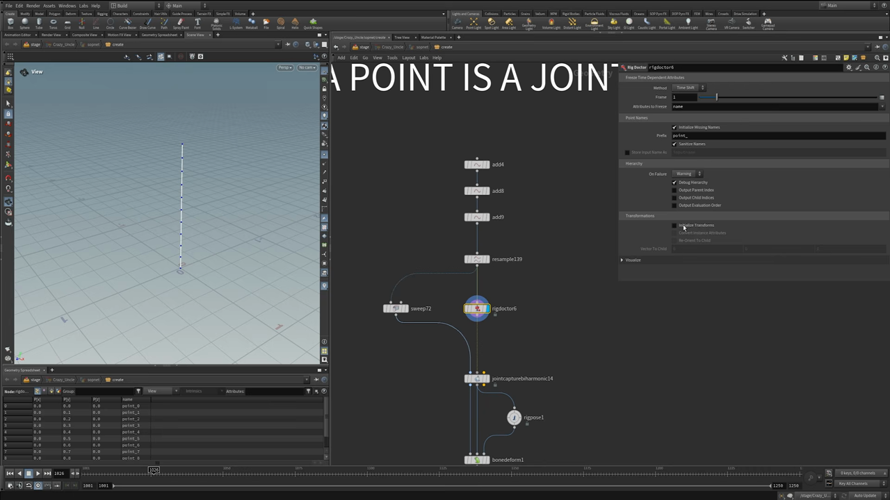
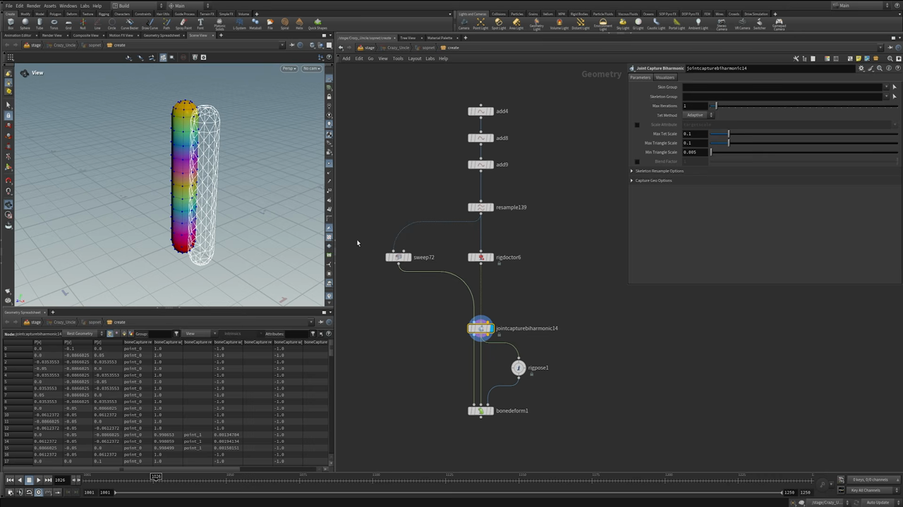
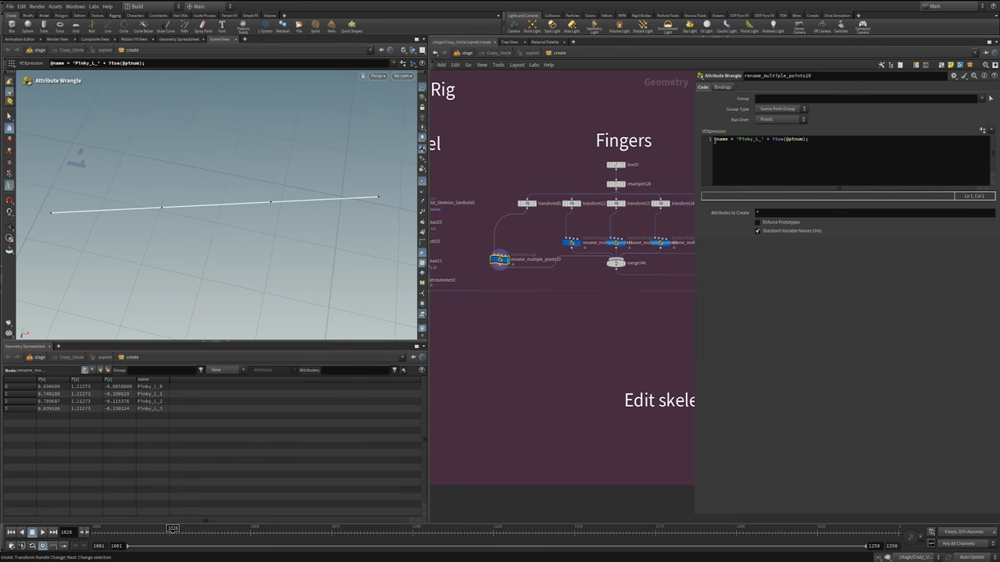
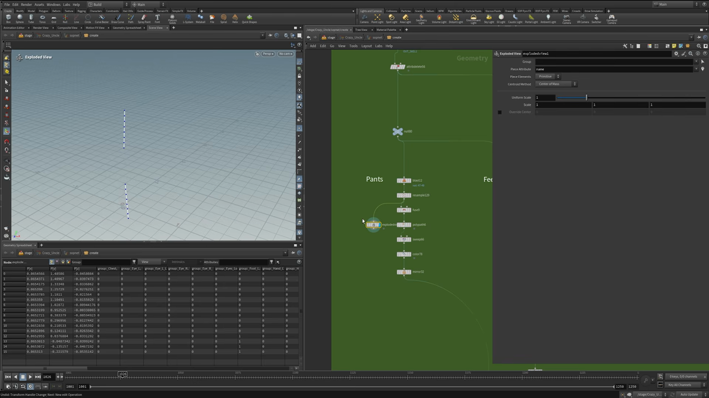
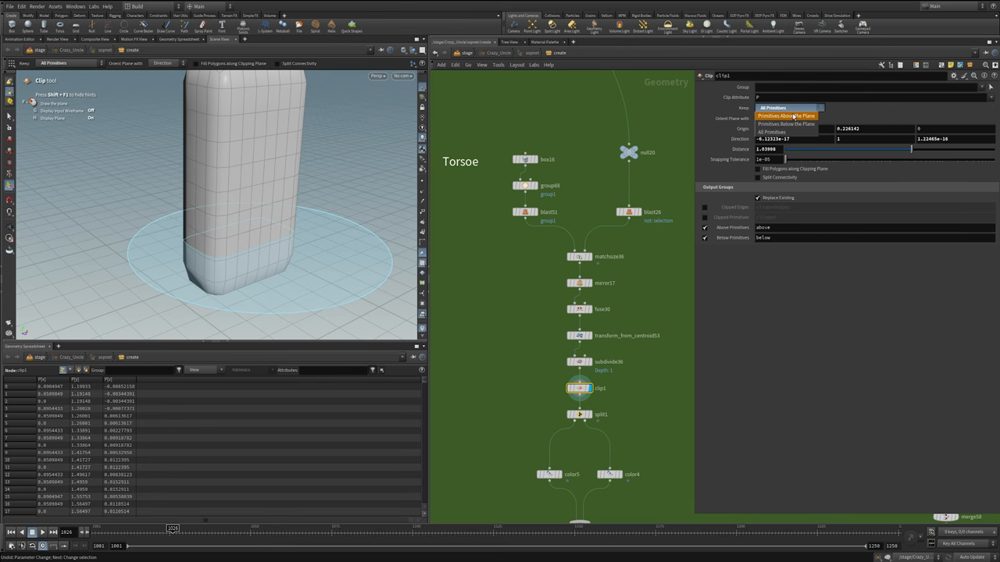
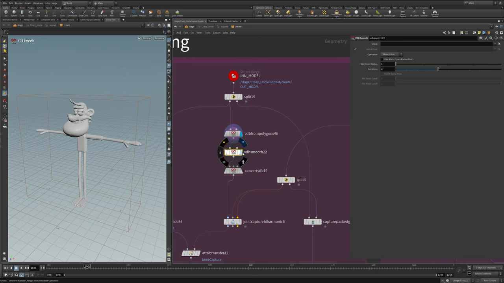

Houdini キャラクター制作 1 — プリリグを先に作ってモデルを駆動する
出典: Character Creation 1 | PreRig Modelling （SideFX 公式チュートリアル Create a Procedural Character の第1回 / 講師 Roy Kristoffersen さん / Houdini 21 / 28:47 / 英語）。 このページは、上記の動画を見ながら自分用にまとめた日本語の学習メモです。SideFX 公式の翻訳ではありません。 シリーズ全体の構成は第0回のメモにまとめています。
この回で扱うこと
- プリリグをモデリング段階で使うと何が嬉しいのか
- KineFX の中核にある「点はジョイントである（a point is a joint）」という考え方
- 最小構成のプリリグを実際に組んで、スキニングして動かすまで
- そのプリリグから体の各パーツを生やしていく手順
- バラバラのパーツを1つのジオメトリにまとめてスキニングする方法
1. なぜプリリグを先に作るのか
この回の主題は「モデリングを始める前にスケルトンを作っておく」ことの効果です。 講師の方は、プロポーションが正しいかどうかを確かめる例として 人差し指が鼻の先に届くかを試していました。
最初の状態では指が鼻に届かず、このままではアニメーションに耐えないことがわかります。 そこでスケルトンに戻って腕を長くし、手を外側に動かすと、モデル側がそれに追従します。 簡易的なスキニングをかけて同じポーズを取らせると、今度は鼻に届くようになる、という流れでした。
ここで大事なのは、この確認がモデリングを始める前にできている点だと思います。 どの DCC でもプロキシジオメトリを置いて「このプロポーションでいいや」と判断する場面はありますが、 そこで確認を省くと、数週間モデリングして、UV を張って、テクスチャを描いたあとに リガーやアニメーターから「これでは動かない」と戻ってくる可能性が残ります。 そうなるとやり直しの範囲がとても広くなってしまいます。
2. 核になる原則: 点はジョイントである
この仕組みを支えているのが KineFX の 「a point is a joint（点はジョイントである）」という原則です。 ポイントがそのままジョイントとして扱われるので、普通の SOP のモデリングで線を作れば、 それがそのままスケルトンになります。

最小構成を組んでみる
Addで点を1つ置きます- もう1つ
Addを足して点を置き、上に動かします - 3つめの
Addの Polygons タブで By Group に*を入れます。これで2点が結ばれて線になります Resampleをかけて点を増やします（動画では11点になっていました）
この時点ではまだただの線です。ここに Rig Doctor を足すとスケルトンとして扱えるようになります。
Rig Doctor で必要な設定
| セクション | パラメータ | 効果 |
|---|---|---|
| Point Names | Initialize Missing Names | name アトリビュートを付けます。Prefix が point_ なので point_0、point_1… という名前になります |
| Transformations | Initialize Transforms | transform（3×3）と localtransform（4×4）のマトリクスが付きます |
Initialize Transforms を入れ忘れると動きません。 動画でもここが一番重要だと強調されていました。これを有効にすると、1本の線がモデルとスケルトンの 両方を駆動するようになります。
スキニングして動かす

ノードのつながりはこうなっていました。
add4 → add8 → add9 → resample139 ┬→ sweep72 ────────┐
└→ rigdoctor6 ─────┤
↓
jointcapturebiharmonic14
↓
rigpose1 → bonedeform1Sweepで線からチューブ状のジオメトリを作りますRig Doctorで同じ線をスケルトンにしますJoint Capture Biharmonicに両方を入れてスキニングしますRig Poseでポーズを付け、Bone Deformで変形させます
ここまで組んでおくと、あとから Sweep の形を変えても、Resample の点数を増やしても、
スキニングは自動的に付いてきてくれます。動画では「クライアントがチューブの太さに満足しなかったら」という例で、
Point と Scale Along Curve を足して太さを変えていました。それでも
Joint Capture Biharmonic は勝手に追従します。
3. 実際のキャラクター用プリリグ
ここからは実際の Crazy Uncle のプリリグです。ベースには、講師の方が長く使っている ストック済みのスケルトンが使われていました。脚・腕・背骨・頭・目などが一通り入っているものです。
- ルートを削除して、少し編集します
- 手と足を
Blastで消します。ここは自分で作り直したいためです - 不要な
Attribute Deleteをいくつか通します
指と足の指を自分で作る
手足は既製のものを使わず、あとでモデルを生やしやすい形に作り直しています。
Lineを置きますResampleで指1本あたり3ジョイントになるようにしますTransformをいくつか重ねて、指の位置に配置しますAttribute Wrangle（ノード名はrename_multiple_points）で名前を付けます

この Wrangle の中身は1行だけです。
@name = 'Pinky_L_' + itoa(@ptnum);ポイント番号を文字列にして後ろに付けているだけなのですが、これで
Pinky_L_0 / Pinky_L_1 / Pinky_L_2 / Pinky_L_3 と
連番の名前が付きます。番号はポイントのソート順に依存します。
同じものを指と足の指の分だけ用意していました。
作った指たちを Merge でまとめ、Transform を少し入れたあと、
ジョイントの親子付けをします。マージしただけでは親子関係が付いていないので、
ここを通さないと階層になりません。
プロポーションの調整と、スキニング用の出力
Edit Skeletonでプロポーションを整えます。ここは何度でも触れます- 不要なアトリビュートを
Attribute Deleteで落とします Rig Doctorを足して Initialize Transforms を有効にしますSkeleton Mirrorをかけて左右を揃え、これをスキニング用に使います
4. スケルトンからモデルを生やす
ここからが「リグがモデルを駆動する」部分です。パーツごとに同じような組み方が繰り返されます。
パンツ（脚）

blast112 → resample129 → fuse8 → polypath6 → sweep16 → color78 → mirror32Blastで必要な点だけ残しますResampleで十分な密度にしますFuseで点をくっつけますPolyPathで1本のポリゴンにまとめますSweepで断面を掃引して脚の形にしますColorで色を付け、Mirrorで反対側の脚を作ります
ここで PolyPath を入れる理由が実演されていました。
入れずに Exploded View で見ると、点が2本の別々のポリゴンに分かれてしまいます。
PolyPath を通すと1本のポリゴンにまとまり、Sweep が意図通りに効くようになります。
腕でも同じ理由で Fuse と PolyPath を通していました。
足とつま先
- つま先:
Blast→Resample→Sweep→Subdivide→Smooth。Sweepの太さでつま先の大きさを調整できます - 足そのもの:
Box→Edit→Match Size→Transform→ もう一度Match Size（Y 方向に乗るように）→Merge→Color→Mirror
胴体

box16 → group68 → blast151 → matchsize36 → mirror17 → fuse30
→ transform_from_centroid53 → subdivide36 → clip1 → split1 → color × 2 → merge58Boxを置いてGroupとBlastで半分だけにします。ミラーしたときに内側にジオメトリが残らないようにするためですFuse→Transform→Subdivideと整えますClipで上下に分けますSplitで実際に2つに分けて、それぞれにColorを当ててからMergeします
この Clip の使い方が少し変わっていて面白かったところです。
通常の Clip は Keep で「平面より上」か「平面より下」のどちらかを残しますが、
ここでは Keep を All Primitives にして両方を残し、
Output Groups の Above Primitives に above、
Below Primitives に below というグループ名を出力しています。
こうしておくと、後ろの Split でそのグループを使って上半身と下半身に分けられます。
腕・手・指・首
| パーツ | 組み方 |
|---|---|
| 腕（シャツ部分） | Blast → Resample → Fuse → PolyPath → Carve → Sweep → Color |
| 腕（素肌部分） | Fuse → PolyPath → Sweep |
| 手のひら | Edit → Subdivide → Blast → Match Size（Scale to Fit）→ Transform |
| 指 | Blast → Resample → Sweep → Subdivide → Smooth → 手のひらと Merge |
| 首 | Resample → Sweep → Color |
片手ぶんを作ったあと Mirror につなぐと両手になります。
ここまでで体はひととおり組み上がります。この状態で Edit Skeleton に戻ってプロポーションを変えると、
モデル全体がそれに追従してくれます。
顔まわり
頭は少し込み入っていましたが、やっていること自体はシンプルでした。
- ベースは
EditとSubdivideでこぶを足していく作り。講師の方は ZBrush 出身だそうで、その感覚で盛っているとのことでした - 耳: ジオメトリを置いて
Booleanで耳たぶを作り、Transform→Mirror→Subdivide - 鼻: カーブを
Transform→Carveして小鼻を作り、Resample→Sweep→Smooth→Mirror。鼻そのものもResample+Sweep+Smooth - 口ひげ: カーブ →
Resample→Sweep。その上にもう一度Sweepをかけて少しうねらせています - 眉:
Resample→Mirror→Sweep - 目とまぶた:
Copy to Pointsで頭のジョイントに乗せます。まぶたはPeak→Transform→Clipで上下に分け、Merge。不要な色と名前はAttribute Deleteで落とします
顔のパーツはまとめて Copy to Points で頭のジョイントに配置されています。
5. バラバラのパーツを1つにまとめる
ここが最後の、そして忘れると詰まるところです。ここまでで作ったパーツは それぞれ独立したジオメトリで、つながっていません。 このままでは全体に対するスキニングができないので、いったん VDB を経由して1つの塊にします。

OUT_MODEL → split19 → vdbfrompolygons46 → vdbsmooth22 → convertvdb19 → split4
↓
jointcapturebiharmonic6 ／ capturepackedgeo
↓
attribtransfer42 (boneCapture)VDB from Polygonsで全パーツを VDB に変換します。これで1つのボリュームになりますVDB Smoothでならします。動画では Operation がMean Value、Filter Voxel Radius が1、Iterations が4でしたConvert VDBでポリゴンに戻します- 戻したメッシュに
Joint Capture Biharmonicをかけてスキニングします - 目だけは
Capture Packed Geometryで目のジョイントに割り当てます - 元の（VDB を通していない）ジオメトリを
Subdivideし、Attribute TransferでboneCaptureを転送します。少しSmoothもかけています Bone Deformにつないで、いくつかポーズを取らせて確認します
手順4で作ったウェイトを、手順6で元のジオメトリに転送しているところがポイントだと思います。 VDB を通したメッシュはウェイトを計算するためだけに使い、実際に表示するのは元のジオメトリ、という分担です。
なお動画では確認用に Bone Deform を使っていますが、
ここは APEX のフルリグに置き換えることもできる、と補足されていました。
この段階では確認できれば十分なので、シンプルな Bone Deform で済ませています。
この回のまとめ
- ポイントがそのままジョイントになるので、
LineとResampleだけでスケルトンが作れます Rig Doctorの Initialize Transforms が、線をスケルトンとして機能させる鍵になります- 体の各パーツは
Blast→Resample→Fuse→PolyPath→Sweepというほぼ同じ型の繰り返しで作れます PolyPathを省くとポリゴンが分かれてしまいSweepが意図通りに効きません- バラバラのパーツは VDB を経由して1つにまとめ、そこで計算したウェイトを
Attribute Transferで元のジオメトリに戻します
次の第2回は Procedural Modeling Workflows で、シリーズ最長の48分の回になります。 VDB・Quad Remesh・スカルプトツールまわりが中心のようです。